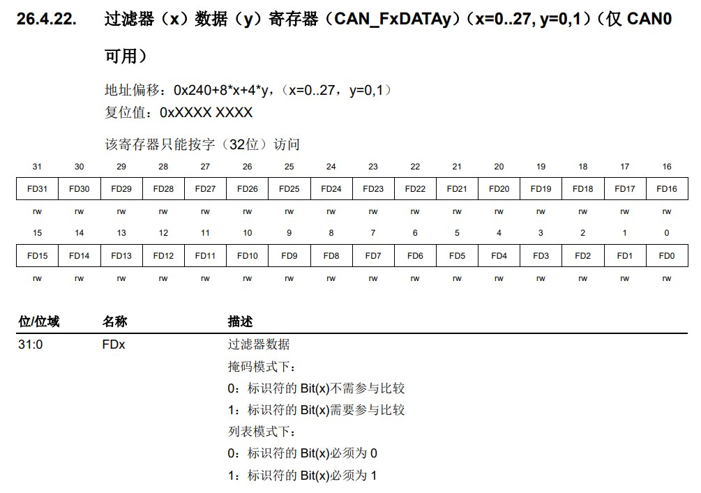

GD32F407 MS-RTOS适配总结
2023-03-09 • MS-RTOS -驱动- bsp • CCAN GPIOADC •前言
这是我第一次接触MS-RTOS这个适用于ARM和C-sky架构由翼辉信息全新设计的一款面向未来物联网和智能设备需求的新一代小型智能物联网操作系统。
本篇文章对于在项目中基于GD32F407ZET6适配MS-RTOS遇到的问题进行汇总记录。
CAN 总线丢帧问题
CAN（Controller Area Network）总线是一种可以在无主机情况下实现微处理器或者设备之间相互通信的总线标准。
在 GD32F407ZET6 芯片上 CAN 总线控制器作为 CAN 网络接口，遵循 CAN 总线协议 2.0A 和 2.0B。CAN 总线控制器可以处理总线上的数据收发并具有 28 个过滤器，过滤器用于筛选并接收用户需要的消息。用户可以通过 3 个发送邮箱将待发送数据传输至总线，邮箱发送的顺序由发送调度器决定。并通过 2 个深度为 3 的接收 FIFO 获取总线上的数据，接收 FIFO 的管理完全由硬件控制。同时 CAN 总线控制器硬件支持时间触发通信（Time-trigger communication）功能。
在驱动实现后，测试过程中发现，标准帧以及扩展帧的情况下，接受均有丢帧的情况发生。

调试查看测试结果后，发现不同波特率下丢弃的帧，帧ID为固定的值。故怀疑问题出在驱动代码
在 MS-RTOS 创建 CAN 设备的函数 gd32_can_dev_create 里发现了对于 CAN 和 CAN 滤波器的配置代码，对照手册后发现，问题出在函数__can_filter_init

在函数__can_filter_init中，对于 CAN 滤波器的掩码模式和列表模式的过滤器数据寄存器值配置有误，应均设置为0

修改后测试，CAN 通信再无丢帧现象发生
ADC 功能验证问题
在GD32F407ZET6芯片上集成了 12 位逐次逼近式模数转换器模块（ADC），可以采样来自于 16 个外部通道和 2 个内部通道和一个电池电压（VBAT）通道的模拟信号。这 19 个 ADC 采样通道都支持多种运行模式，采样转换后，转换结果可以按照最低有效位对齐或最高有效位对齐的方式保存在相应的数据寄存器中。片上的硬件过采样机制可以通过减少来自 MCU 的相关计算负担来提高性能。
ADC 转换的发起可以有硬件触发和软件触发两种方式
硬件触发即外部触发，需要使用到定时器来作为触发源，具体触发方式以及触发源选择如下：
函数实现如下：
/* * 使用定时器做触发源 */ void timer_pwm_output_test (char *timer_path, ms_uint8_t pwm_ch, ms_uint8_t event_trig) { int fd; config_timer_t timer_cfg; config_pwm_for_ad_t config_pwm_for_ad; int res; fd = ms_io_open(timer_path, O_RDWR, 0666); if (fd < 0) { ms_printf("open error!\n"); return MS_ERR; } timer_cfg.psc = 0; /* 0x0000 and 0xFFFF */ timer_cfg.intval = 10000 - 1; /* 0x0000 and 0xFFFF */ config_pwm_for_ad.compare = 1000; timer_cfg.count_mod = 0; res = ms_io_ioctl(fd, CMD_TIMER_CONFIG, &timer_cfg); ms_printf("CMD_TIMER_CONFIG: %d\n", res); res = ms_io_ioctl(fd, CMD_TIMER_START, MS_NULL); ms_printf("CMD_TIMER_START: %d\n", res); /* * 占空比 = compare / (intval + 1) * 100% */ config_pwm_for_ad.pwm_en = MS_TRUE; config_pwm_for_ad.polarity = 1; config_pwm_for_ad.pwm_ch = pwm_ch; config_pwm_for_ad.trigger_event = event_trig; res = ms_io_ioctl(fd, CMD_TIMER_WAVE_SET_FOR_ADC, &config_pwm_for_ad); ms_printf("CMD_TIMER_WAVE_SET_FOR_ADC: %d\n", res); } int adc_timer_trigger_test(ms_uint32_t exttrig_src) { int fd; int ret; int i; size_t len; config_adc_t config; ms_uint16_t val[16]; int count; int res; fd = ms_io_open("/dev/adc1", O_RDWR, 0666); if (fd < 0) { ms_printf("open error!\n"); return MS_ERR; } res = ms_io_ioctl(fd, CMD_ADC_STOP, MS_NULL); ms_printf("CMD_ADC_STOP: %d\n", res); config.conv_length = MS_ARRAY_SIZE(sequence); for (i = 0; i < config.conv_length; i++) { config.conv_seq[i] = sequence[i].channel; //填写采集序列, 最长不能超过 16 个 } config.exttrig_src = exttrig_src; ret = ms_io_ioctl(fd, CMD_ADC_CONFIG, &config); if (ret < 0) { ms_printf("adc config error!\n"); return MS_ERR; } count = 0; while (1) { /* * 用外部触发采集,c重新配置一次触发 */ len = 0; while (len < config.conv_length * sizeof(ms_uint16_t)) { ret = ms_io_read(fd, (ms_ptr_t)&val, config.conv_length * sizeof(ms_uint16_t) - len); len += ret; } #if 1 /* * 频率过高时，需要取消打印 */ count++; if (count == 1) { count = 0; ms_printf("read:\n"); for (i = 0; i < config.conv_length; i++) { ms_printf("[%s] = %x,", sequence[i].desc, val[i]); ms_printf("(%f)\n", (float)val[i] * 3.3 / 4096.0); } ms_printf("\n\n"); } #endif } ms_io_close(fd); }使用软件触发则需要将通道对应的IO引脚接地或者接3.3V，对应转换结果为0/fff，即表示ADC转换功能正常。
代码如下：
int adc_soft_trigger_test(void) { /* * 将通道对应引脚接到 0V - 3.3V 的电压上, 输出的值应该为 0 - 4095 */ int fd; int ret; config_adc_t config; ms_uint16_t value[16] = {0}; int i; fd = ms_io_open("/dev/adc1", O_RDWR, 0666); if (fd < 0) { ms_printf("open error!\n"); return MS_ERR; } ret = ms_io_ioctl(fd, CMD_ADC_STOP, MS_NULL); ms_printf("CMD_ADC_STOP: %d\n", ret); /* * 配置规则组 */ config.conv_length = MS_ARRAY_SIZE(sequence); for (i = 0; i < config.conv_length; i++) { config.conv_seq[i] = sequence[i].channel; //填写采集序列, 最长不能超过 16 个 } config.exttrig_src = ADC_EXTTRIG_SRC_NONE; ret = ms_io_ioctl(fd, CMD_ADC_CONFIG, &config); if (ret < 0) { ms_printf("adc config error!\n"); return MS_ERR; } int count = 0; while (1) { /* * 不用定时器，使用软件手动触发（每 10ms 触发一次） */ ms_io_ioctl(fd, CMD_ADC_SOFT_TRIG, &config); ms_thread_sleep_ms(1000); ms_io_read(fd, (ms_ptr_t)&value, config.conv_length * sizeof(ms_uint16_t)); count++; if (count == 1) { count = 0; ms_printf("read:\n"); for (i = 0; i < config.conv_length; i++) { ms_printf("[%s] = %x,", sequence[i].desc, value[i]); ms_printf("(%f)\n", (float)value[i] * 3.3 / 4096.0); } ms_printf("\n\n"); } } while(1) { ms_thread_sleep_ms(1000); } ms_io_close(fd); } int main (int argc, char **argv) { /* * 通道号 外部引脚 有权使用的ADC 功能 * channel 0 PA0 ADC 1 * channel 1 PA1 ADC 1 * channel 2 PA2 ADC 1 * channel 3 PA3 ADC 1 * channel 4 PA4 ADC 1 * channel 5 PA5 ADC 1 * channel 6 PA6 ADC 1 * channel 7 PA7 ADC 1 * channel 8 PB0 ADC 1 * channel 9 PB1 ADC 1 * channel 10 PC0 ADC 1 * channel 11 PC1 ADC 1 * channel 12 PC2 ADC 1 * channel 13 PC3 ADC 1 * channel 14 PC4 ADC 1 * channel 15 PC5 ADC 1 * * 捕获值 0x0000 - 0x0fff 即 (0V - 3.3V) */ /* * 手动触发每次采集: 每 10ms, 执行一次 CMD_ADC_SOFT_TRIG */ adc_soft_trigger_test(); /* * 在 pwm 波上升沿触发 ad 采集， 一次采集 16 路 (注意 adc2 有几个通道无法采集) */ // char timer_path[] = "/dev/timer1"; // ms_uint8_t pwm_ch = 1; // ms_uint8_t event_trig = EVENT_CC1; // ms_uint32_t exttrig_src = ADC_EXTTRIG_SRC_T1_CH1; // char timer_path[] = "/dev/timer1"; // ms_uint8_t pwm_ch = 2; // ms_uint8_t event_trig = EVENT_CC2; // ms_uint32_t exttrig_src = ADC_EXTTRIG_SRC_T1_CH2; // char timer_path[] = "/dev/timer1"; // ms_uint8_t pwm_ch = 3; // ms_uint8_t event_trig = EVENT_CC3; // ms_uint32_t exttrig_src = ADC_EXTTRIG_SRC_T1_CH3; // timer_pwm_output_test(timer_path, pwm_ch, event_trig); // adc_timer_trigger_test(exttrig_src); return (0); }软件触发程序测试结果如下：
测试得出 ADC 硬件触发与软件触发功能均正常。
原创内容使用 知识共享 署名-非商业性使用-相同方式共享 4.0 (CC BY-NC-ND 4.0) 协议授权。